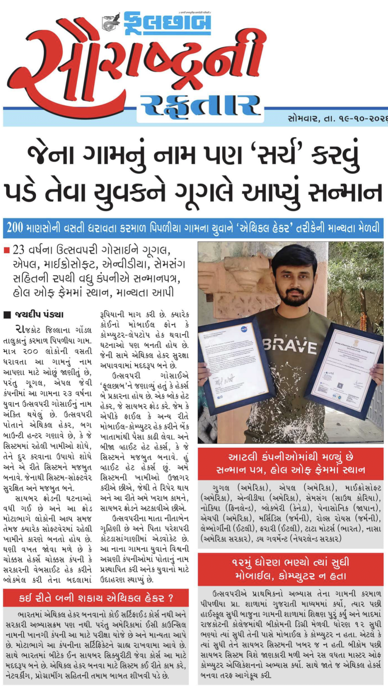

Hello, Hackers! 👋💻

I hope you’re all doing well and continuing to help make our digital world safer. 🌍🔐 Today, I’m excited to share a special milestone in my cybersecurity journey: I have once again been featured in one of Gujarat’s leading newspapers, Phulchhab, on 19 September 2026. 📰🎉
The feature coincided with the final day of Navratri, making this recognition especially meaningful to me. With the blessings of Maa, I feel grateful to see my journey, achievements, and contributions to cybersecurity highlighted in the newspaper. 🙏🔱
A Headline I’ll Remember 📰✨
The article featured the headline “Google Honors Youth from a Village Whose Name Needs to Be Searched.” Seeing my journey receive this recognition is a proud and humbling moment. I’m thankful to the Phulchhab team for taking the time to hear about my experiences and for choosing to share my story with readers across Gujarat. ❤️🏆
Those who have been following me for a long time would already know this my achievements and journey has also been highlighted by publications and interviews, including Voice of Day wich you can read here: https://mrxfact0r99.github.io/Articles/articles/index-34.html and The Pioneer (National Edition) at here: https://mrxfact0r99.github.io/Articles/articles/index-61.html Each opportunity has encouraged me to keep learning, improving, and contributing to cybersecurity. 🗞️🎥
My Journey and Achievements 🔐🏆
I connected with the Phulchhab team and had the opportunity to discuss my journey, experiences, and work in cybersecurity. After discussing my contributions and completing their confirmation and verification process, the team decided to feature my story. I’m sincerely grateful for their interest and recognition. 📰✨
At just 23 years old, I feel fortunate to have contributed to cybersecurity and bug hunting, receiving acknowledgements and recognition involving various well-known companies, organizations, and government entities.
Throughout my journey, my work has involved organizations and companies across several fields, including:
Google, Apple, Microsoft, NVIDIA, Samsung, Nokia, BlackBerry, Panasonic, HP, Mercedes, Rolls-Royce (BMW Group), Lamborghini (Audi, Volkswagen Group), Ferrari, Tata Motors, NASA (Government of USA), Dutch Government (Government of Netherland), NCIIPC (Government of India), Government of Russia, Government of Japan, HostGator, Upstox, Flipkart, La Pino'z Pizza, McDonald's, Rapido, Sorare, Fluenceenergy and many more.
These experiences have been important milestones in my journey. They motivate me to continue learning, strengthening my skills, and doing my part to help make the digital world safer. 🌍🛡️
Because of newspaper space limitations, it was not possible to include every company and government organization in the article. Even so, I’m thankful that the Phulchhab team chose to highlight my journey and achievements. Being featured in a newspaper with a strong readership across several districts of Gujarat is a great honor. ❤️🙏
Gratitude 🙏❤️
First and foremost, I dedicate my gratitude to my greatest inspiration and guru, The Biggest Hacker Shiva 🕉️, and Maa Shakti 🔱. Their blessings and guidance mean everything to me.
I’m deeply grateful to my best friend, my partner, and my Vasudev Krishna - K3$#!V@ ❤️🧿 who has motivated, supported, and guided me through every stage of this journey.
A heartfelt thank you to my family, my well-wishers, and everyone who has believed in me, encouraged me, and stood beside me through challenges and achievements. This recognition is not mine alone; it belongs to everyone who has been part of my journey. 🫶✨
I dedicate my achievements and my life’s journey to the divine blessings that guide me and to the people who continue to stand beside me. 🙏
The Journey Continues… 🚀
This is another milestone, not the destination. There is still so much to learn, explore, and contribute to the world of cybersecurity. I’ll continue working, learning, hunting bugs, sharing knowledge, and doing my best to make the digital world safer for everyone. 💻🔐
Thank you for taking the time to read my story and for being a part of this journey. If you have any questions or would like to connect, you can find my social media profiles and contact links through my Linktree below. ❤️🙏
With gratitude, faith, and determination, the journey continues… 🚀✨
Thank You,
MR. X FACTOR